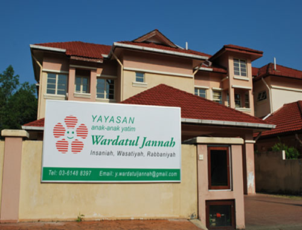

INFORMATION ABOUT THE FOUNDATION
Yayasan Anak-Anak Yatim Wardatul Jannah was established on 19 June 2009 and officially registered on 20 January 2010 under the "Trustee Incorporation Act (1952)" in the Department of the Prime Minister of Malaysia (Registration No: PAPB 2/2010).
The main objective of this foundation is to develop orphans and the poor so that they have noble character and reach the Islamic level of "insaniyah", "rabbaniyah" and "wasatiyyah" .
In 2015, a plot of land measuring 4205 square meters (45,333 square feet) at Jalan Rimba Riang 9/1 Kota Damansara, Petaling Jaya, Selangor was identified for the purpose of establishing the Wardatul Jannah Foundation Welfare Institution called the Human Development Complex. This modern and complete complex was completed in 2018 and became a permanent and larger center for the development and education of orphans. This complex can accommodate up to 150 orphans from all over Malaysia
This land used to be owned by the Selangor State Development Corporation (PKNS) and they have agreed to sell this land to the Foundation at a special price of RM 1.36 million (RM 30 per square foot) compared to the market price of RM 2.72 million (RM 60 per square foot). This construction has been fully completed at a cost of RM 5.6 Million.
This welfare institution is planned to be the best in the state of Selangor and will be worked on to become one of the examples of institutions for orphans that are managed wisely and professionally.